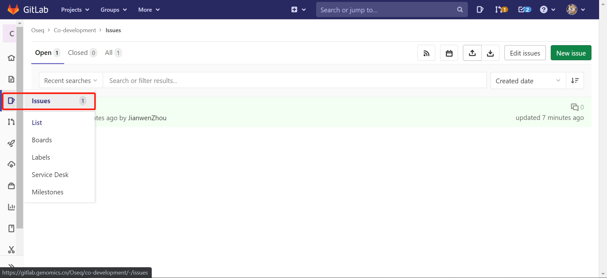
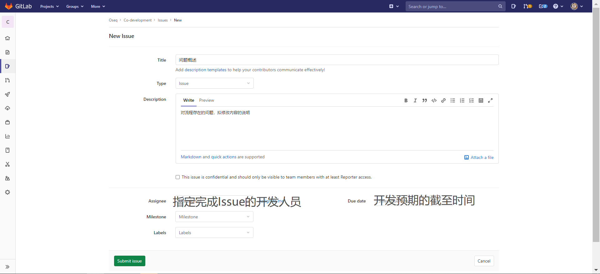
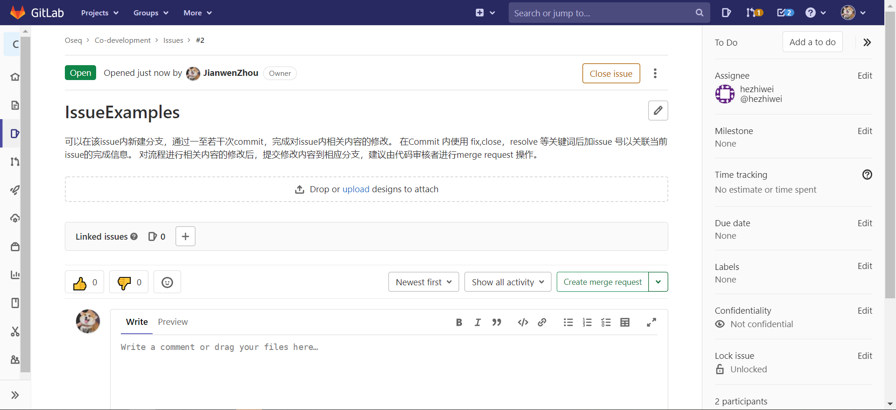
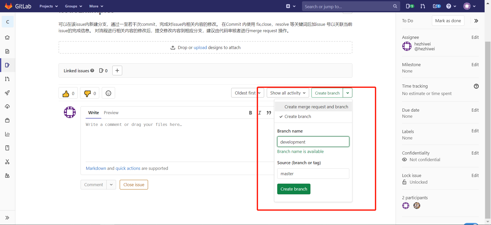

ISSUE创建及开发任务的划分¶
在生产环境稳定的流程版本基础上，流程的变更点应经过需求review后在Git Repository中以Issue的形式提交，使得项目相关开发者更紧密的追踪项目的进展方向，以期有效整合开发能力避免重复开发。
实例仓库可见于:https://gitlab.genomics.cn/Oseq/co-development， 假定 commit SHA = 81b0fb58 为初始稳定版本。
进入所在 Git Repository 的Issue 界面后，可以了解正在进行中Issue情况. 通过 New issue 按钮可以创建新的Issue：
实例仓库中创建的内容如下：
可以在被委托的开发任务和自己感兴趣的issue创建新的分支进行对应的开发测试工作：
